17/08/2026 — 4 bệnh nhân có ST chênh lên, nhiễm trùng và troponin tăng: ai là nhồi máu cơ tim do tắc (OMI) và ai là viêm cơ tim?
Bản dịch tiếng Việt của bài "4 patients with ST elevation, infection, and elevated troponin: which is Occlusion MI and which is myocarditis?" – Dr. Smith’s ECG Blog. Giữ nguyên toàn bộ 12 hình ảnh của bản gốc.

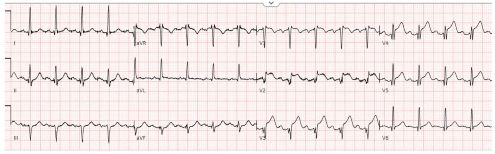
Tác giả: Matthew McArthur và Jesse McLaren
4 bệnh nhân đến khám với ST chênh lên, đang có nhiễm trùng kèm hoặc không kèm sốt, và troponin tăng. Ai là STEMI dương tính thật và ai là viêm cơ tim?
Bệnh nhân 1: 70 tuổi, đang hóa trị, đến khám vì sốt, buồn nôn/nôn, và hs-trop I là 7,000ng/L

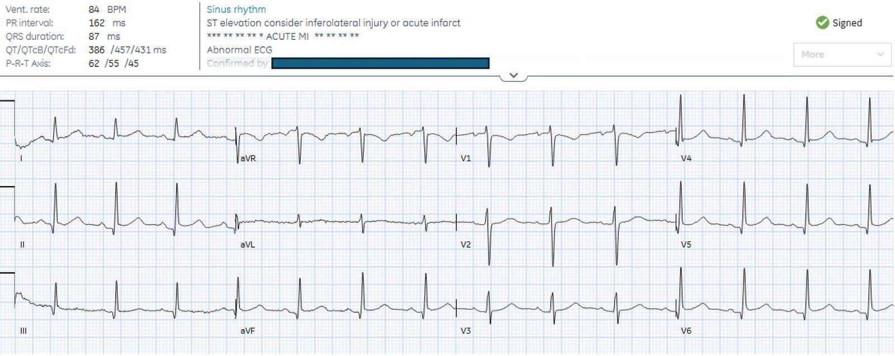
–
Bệnh nhân 2: 55 tuổi, gần đây ho và ớn lạnh, đến khám vì tức ngực 6 giờ

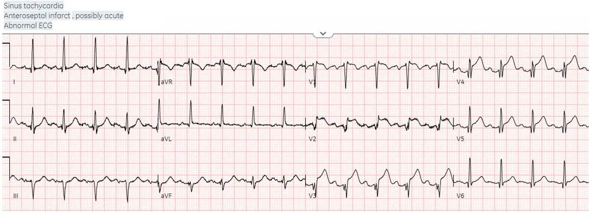
–
Bệnh nhân 3: 25 tuổi, mới bị nhiễm liên cầu (strep), nay đến khám vì đau ngực cấp

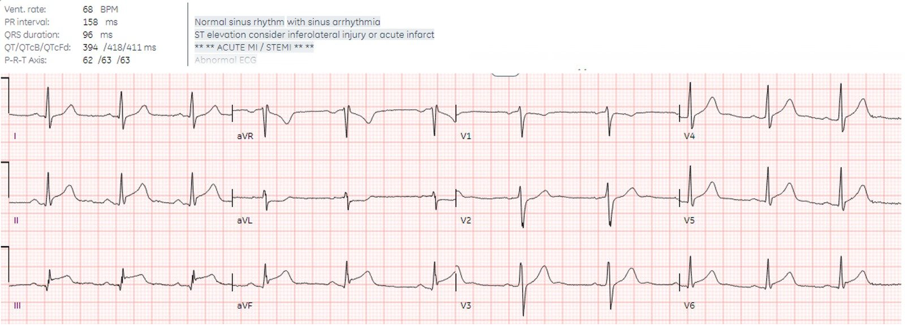
–
Bệnh nhân 4: 30 tuổi, khỏe mạnh, gần đây có bệnh giống viêm dạ dày-ruột, đau ngực cấp thay đổi theo tư thế và kiểu màng phổi (đau tăng khi hít thở). Kết quả đọc bằng máy tính ghi *ACUTE MI/STEMI* (nhồi máu cơ tim cấp/STEMI)

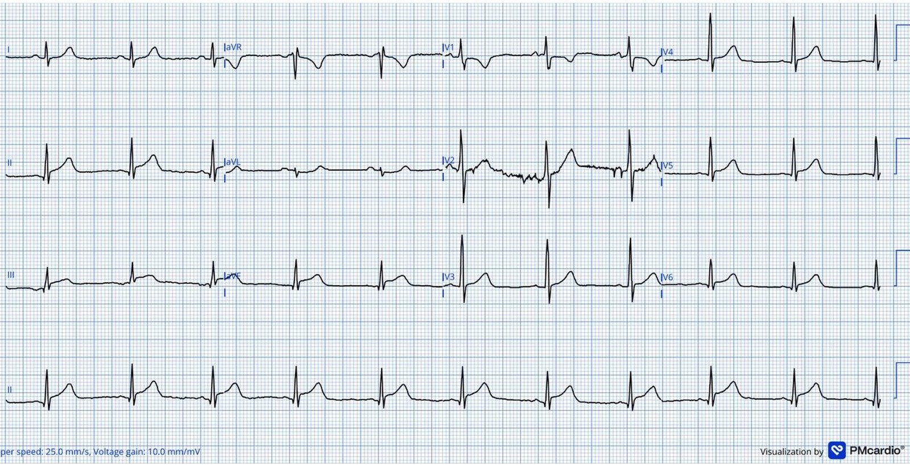
STEMI hay viêm cơ tim
Tiêu chuẩn STEMI có tỉ lệ kích hoạt dương tính giả cao, tức là báo động STEMI (code STEMI) mà không có tổn thương thủ phạm. Có thể phân tầng các trường hợp này thành dương tính giả có thể phòng tránh được (ví dụ troponin âm tính, khi điện tâm đồ có nguyên nhân gây ST chênh lên nhận diện được và không phải ACS, như tái cực sớm, viêm màng ngoài tim, LVH, LBBB không thỏa tiêu chuẩn Sgarbossa cải biên), và dương tính giả hợp lý, khi chẩn đoán cần chụp mạch vành để loại trừ tắc động mạch vành cấp (ví dụ troponin dương tính kèm ST chênh lên do Takotsubo, SCAD, co thắt mạch). Queen of Hearts (QoH) có thể giảm dương tính giả có thể phòng tránh được – bao gồm toàn bộ các ca viêm màng ngoài tim trong nghiên cứu này.
Viêm cơ tim khó hơn vì troponin dương tính, và thay đổi điện tâm đồ có thể rất đa dạng – từ không đặc hiệu, đến ST chênh lên lan tỏa giống viêm màng ngoài tim, đến thay đổi ST theo vùng/soi gương giống STEMI dương tính thật. Nhưng loại sau là chẩn đoán loại trừ bằng chụp mạch vành – kể cả ở bệnh nhân trẻ (là người vẫn có thể bị tắc động mạch vành cấp hoặc SCAD), người không có yếu tố nguy cơ (cho tới biến cố đầu tiên của họ), và người có tiền triệu virus (vốn làm tăng nguy cơ huyết khối). Sau thăm dò ban đầu gồm điện tâm đồ, troponin và siêu âm tim, đồng thuận chuyên gia ACC 2024 về đánh giá viêm cơ tim khuyên rằng “Cần loại trừ bệnh động mạch vành tắc nghẽn bằng chụp mạch vành (xâm lấn hoặc qua CT) khi phù hợp về lâm sàng”, sau đó chẩn đoán bằng cộng hưởng từ tim.
Một nghiên cứu mới cho thấy QoH có thể nhận diện các hội chứng viêm cơ-màng ngoài tim là không phải OMI với độ đặc hiệu cao. Các ca bất tương hợp – dương tính theo tiêu chuẩn STEMI nhưng QoH không phát hiện dấu hiệu OMI – chủ yếu biểu hiện hình ảnh viêm lan tỏa, không theo vùng chi phối mạch vành. Độ đặc hiệu cao hơn với viêm màng ngoài tim so với viêm cơ tim, với nhiều ca QoH dương tính giả ở viêm cơ tim hơn ở viêm màng ngoài tim – điều này là hợp lý. Nói cách khác, QoH có thể giúp phân tầng các hội chứng viêm cơ-màng ngoài tim thành STEMI dương tính giả có thể phòng tránh được, không có dấu hiệu OMI (những người này có thể vẫn cần loại trừ bệnh mạch vành tắc nghẽn nhưng không nhất thiết bằng chụp mạch vành cấp cứu), và STEMI dương tính giả hợp lý, với điện tâm đồ giống OMI và vẫn là chẩn đoán loại trừ bằng chụp mạch vành.
Quay lại các ca bệnh
Bệnh nhân 1: 70 tuổi, đang hóa trị, đến khám vì sốt, buồn nôn/nôn, và hs-trop I là 7,000ng/L

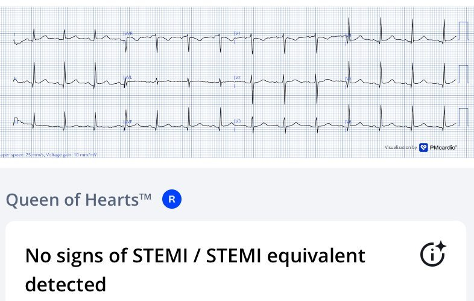
Có STE (ST chênh lên) nhẹ ở dưới-bên, II>III, không có STD (ST chênh xuống) soi gương ở aVL (điều này làm OMI thành dưới rất khó xảy ra) và chỉ có thay đổi soi gương ở aVR. Vì thỏa tiêu chuẩn STEMI + troponin tăng nên phòng thông tim (cath lab) được kích hoạt, nhưng QOH không thấy dấu hiệu OMI nào. Động mạch vành bình thường, troponin đỉnh là 9,000. Siêu âm tim cho thấy giảm động thành dưới-bên, và cộng hưởng từ tim cho thấy phù màng ngoài tim và tràn dịch. Chẩn đoán viêm màng ngoài tim-cơ tim (perimyocarditis). Điện tâm đồ lúc ra viện cho thấy đã trở về bình thường:

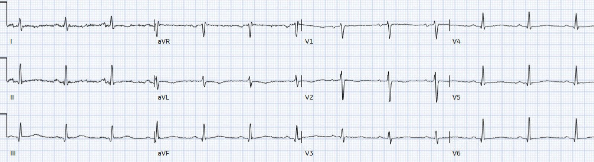
Bệnh nhân 2: 55 tuổi, gần đây sốt và ớn lạnh, đến khám vì tức ngực 6 giờ

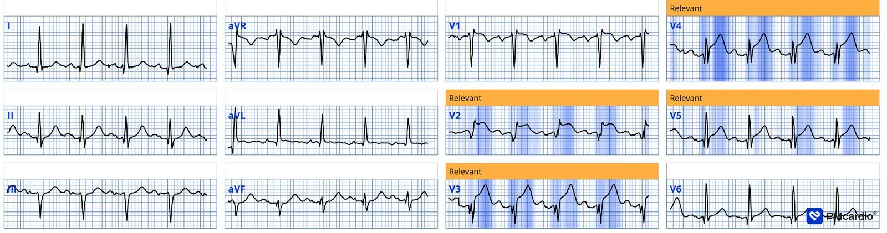
Có nhịp nhanh xoang, sóng Q ở vùng trước kèm STE và sóng T tối cấp, không có thay đổi ở thành bên hay thành dưới – tương ứng với tắc đoạn giữa LAD, được QoH nhận diện là OMI. Phòng thông tim được kích hoạt: tắc 100% đoạn giữa LAD. hs-trop I đầu tiên là 1,000ng/L và đỉnh 90,000, siêu âm tim cho thấy giảm động thành trước. Bệnh nhân cũng có xét nghiệm dương tính với COVID. Điện tâm đồ lúc ra viện cho thấy sóng Q vùng trước vẫn còn, và sóng T đảo ngược do tái tưới máu:

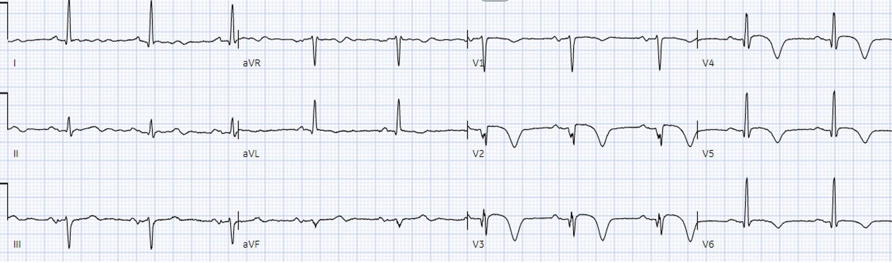
Smith: với tôi, điện tâm đồ đầu tiên trong ca này hoàn toàn không giống viêm cơ tim, và lý do là các sóng T tối cấp. Viêm cơ tim có ST chênh lên, nhưng không có sóng T tối cấp. Một số OMI cũng không có sóng T tối cấp, và đó là những ca có thể là OMI hoặc viêm cơ tim. Nhưng khi có sóng T tối cấp, đó là OMI cho tới khi chứng minh được điều ngược lại!
Bệnh nhân 3: 25 tuổi, mới bị nhiễm liên cầu (strep), nay đến khám vì đau ngực cấp

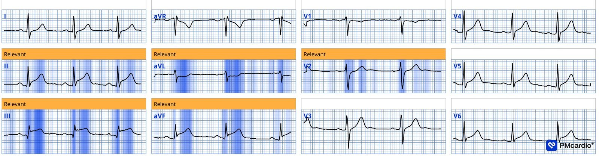
Có STE thành dưới kèm STD soi gương ở aVL, và STD nhẹ ở vùng trước – đáng lo ngại STEMI(+)OMI dưới-sau – được QOH nhận diện là OMI. Phòng thông tim được kích hoạt (một cách hợp lý), và đã loại trừ tắc động mạch vành cấp. hs-trop I đầu tiên là 500 và đỉnh 7,000 ng/L. Siêu âm tim bình thường, không có rối loạn vận động thành theo vùng hay tràn dịch màng ngoài tim. Cộng hưởng từ tim cho thấy ngấm thuốc dưới thượng tâm mạc thành dưới-bên kèm tràn dịch màng ngoài tim lượng ít ở kế bên. Chẩn đoán viêm cơ tim. Điện tâm đồ lúc ra viện cho thấy đã trở về bình thường:

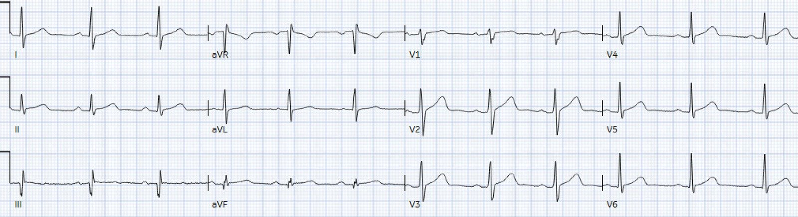
Bệnh nhân 4: 30 tuổi, khỏe mạnh, gần đây có bệnh giống viêm dạ dày-ruột, đau ngực cấp thay đổi theo tư thế và kiểu màng phổi (đau tăng khi hít thở). Kết quả đọc bằng máy tính ghi *ACUTE MI/STEMI* (nhồi máu cơ tim cấp/STEMI)

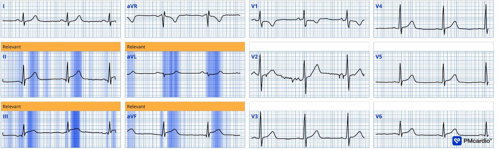
Có ST chênh lên ở các chuyển đạo liên tiếp, gồm các chuyển đạo dưới và các chuyển đạo trước tim bên. Có ST chênh xuống soi gương ở aVL. Tất nhiên, điều này đáng lo ngại STEMI dưới-bên. QOH kết luận STEMI với điểm AI 87%.
Vì tuổi và tiền triệu virus, bệnh nhân được cho uống aspirin (ASA) ngay lúc phân loại ở khoa cấp cứu (ED), 80 phút trước khi được khám, và từ đó cơn đau ngực đã giảm mức độ từ 8/10 xuống 1/10. Điện tâm đồ ghi lại:

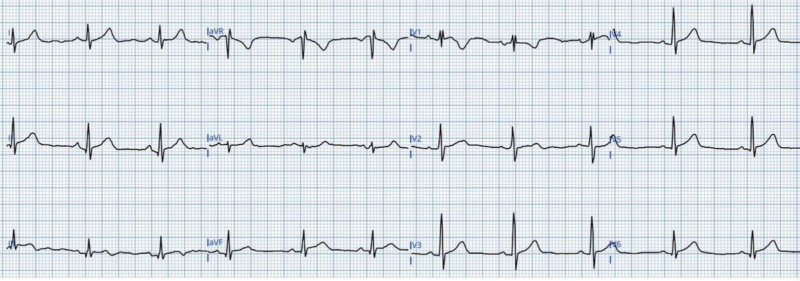
Vẫn còn ST chênh lên thành dưới kèm chênh xuống soi gương ở aVL, nhưng nay có đảo ngược phần cuối sóng T ở III, hình ảnh có thể gặp trong OMI đã tái tưới máu – QOH kết luận đây là OMI đã tái tưới máu với điểm AI 51%. Siêu âm tại giường cho thấy LVEF bình thường, không tràn dịch màng ngoài tim, không có RWMA (rối loạn vận động thành theo vùng) rõ, thất phải nhìn chung bình thường, không có dấu hiệu tăng gánh thất phải. Troponin I độ nhạy cao là 4000ng/L (bình thường <20).
Tôi cho rằng chẩn đoán khả dĩ nhất là viêm cơ tim do virus, nhưng OMI thành dưới cấp (?đã tái tưới máu nhờ ASA) chưa được loại trừ, nhất là dựa trên các dấu hiệu điện tâm đồ — vì vậy tôi đã gọi bác sĩ trực STEMI. Sau khi xem xét ca bệnh và các điện tâm đồ, họ cho rằng ca này không cần kích hoạt phòng thông tim cấp cứu và khuyên hội chẩn nội khoa để điều trị nội khoa viêm cơ tim hay “NSTEMI”. Sau đó bệnh nhân được bác sĩ nội khoa trực khám, và người này cho rằng ca bệnh phù hợp nhất với viêm cơ-màng ngoài tim. Bệnh nhân được nhập viện và điều trị bằng NSAID và colchicine. Troponin đạt đỉnh 11,000 vào ngày hôm sau, CRP ban đầu tăng nhẹ ở mức 19 (bình thường <5) và giảm dần còn 12 trong thời gian nằm viện. Siêu âm tim khi nằm viện xác nhận chức năng hai thất bình thường, không tràn dịch màng ngoài tim và không có rối loạn vận động thành. Bệnh nhân ra viện sau vài ngày, với kế hoạch siêu âm tim lại ở ngoại trú sau vài tuần.
Tuy nhiên, bệnh nhân không được chụp mạch vành hay CT mạch vành để loại trừ bệnh mạch vành tắc nghẽn, cũng không chụp cộng hưởng từ tim để xác nhận viêm cơ tim. Đây là một quyết định nhiều rủi ro: mặc định đây là bệnh do virus và điều trị bằng thuốc kháng viêm, thay vì loại trừ tắc do huyết khối – loại tắc có thể tái tưới máu tự phát nhưng cũng dễ dàng tắc lại tự phát.
Smith: diễn tiến, với cơn đau hết nhanh và đảo ngược phần cuối sóng T, gần như có giá trị chẩn đoán trong ca cuối này, và hoàn toàn không điển hình của viêm cơ tim. Khả năng rất cao đây là OMI đã tái tưới máu. Tôi ngờ rằng sự thận trọng cần thiết đã không được thực hiện vì bệnh nhân còn trẻ.
OMI không hiếm ở bệnh nhân trẻ, và thậm chí cả ở phụ nữ trẻ.
Đặc biệt hãy xem ca này: A teenager with chest pain, a troponin below the limit of detection, and “benign early repolarization”
Điều cần nhớ
- Tuổi trẻ, không có yếu tố nguy cơ, hay có tiền triệu virus không loại trừ được tắc động mạch vành cấp – xem các ca này: một thiếu niên bị tắc LAD và một người 30 tuổi bị OMI thoáng qua
- Viêm màng ngoài tim (cơ tim) mà ‘STEMI dương tính’ nhưng không có dấu hiệu OMI là một STEMI dương tính giả có thể phòng tránh được
- Viêm cơ tim (màng ngoài tim) mà ‘STEMI dương tính’ và giống OMI vẫn là chẩn đoán loại trừ bằng chụp mạch vành
= = =
==================================
BÌNH LUẬN CỦA TÔI, bởi KEN GRAUER, MD (17/8/2026):
Những ngày đầu thời tôi còn được đào tạo, rồi khi là một giảng viên trẻ — thực thể viêm màng ngoài tim cấp đã “cuốn hút” tôi — với diễn tiến được dự đoán trải qua 4 giai đoạn cụ thể (= ST chênh lên lan tỏa — Giả bình thường hóa — Sóng T đảo ngược lan tỏa — và Trở về điện tâm đồ bình thường). Cuối cùng tôi đã học được thực tế:
- Viêm màng ngoài tim cấp đơn thuần hiếm gặp trong thực hành lâm sàng. Phổ biến hơn nhiều trong các trường hợp đến cấp cứu là thiếu máu cục bộ cấp/OMI — phổ biến đến mức câu châm ngôn của Dr. Smith, “Chẩn đoán viêm màng ngoài tim cấp là bạn tự chuốc lấy hiểm họa” — vang lên trong đầu tôi như một “câu thần chú” mỗi lần tôi cân nhắc chẩn đoán viêm màng ngoài tim cấp. Và rồi khi xem xét kỹ hơn — hầu như lần nào tôi cũng nhận ra rằng bệnh nhân không bị viêm màng ngoài tim. Chắc chắn là — chúng tôi đã đăng trên Blog của Dr. Smith những ca viêm màng ngoài tim thật sự. Nhưng các ca viêm màng ngoài tim “đơn thuần” này hiếm gặp.
- Thay vào đó, phần lớn (đa số) thời gian — thay vì viêm màng ngoài tim “đơn thuần” hay viêm cơ tim “đơn thuần” — bệnh nhân bị viêm cơ-màng ngoài tim (tức là, một sự kết hợp nào đó liên quan cả màng ngoài tim lẫn cơ tim).
- Viêm cơ-màng ngoài tim phổ biến hơn viêm màng ngoài tim “đơn thuần” — dù trong số bệnh nhân đến cấp cứu, viêm cơ-màng ngoài tim vẫn ít gặp hơn nhiều so với hội chứng vành cấp.
- Bất chấp những sự thật hiển nhiên trên — viêm màng ngoài tim cấp vẫn có xu hướng bị chẩn đoán quá mức. Điều này thật đáng tiếc — vì bệnh suất và tử suất của việc bỏ sót một ca viêm màng ngoài tim “đơn thuần” tương đối nhỏ so với sai lầm có thể đe dọa tính mạng khi xếp nhầm một OMI cấp thành “viêm màng ngoài tim”.
- Xin nhấn mạnh — bệnh suất của việc bỏ sót viêm cơ-màng ngoài tim cấp không phải là không đáng kể; nhưng vẫn thấp hơn so với bỏ sót một OMI cấp.
= = =
Về bài viết hôm nay …
Dr. McClaren đặt các khái niệm trên vào thử thách — khi ông thách chúng ta phân định giữa viêm màng ngoài tim-cơ tim hay OMI cấp qua 4 tình huống lâm sàng và các điện tâm đồ ban đầu đi kèm. Để củng cố — tôi xin nhắc lại các Điểm “cần nhớ” mà tôi rút ra từ phần trình bày xuất sắc của Dr. McClaren:
- Chúng ta cần chấp nhận rằng ở những bệnh nhân đến cấp cứu vì đau ngực — điện tâm đồ ban đầu tự nó có thể không cho phép loại trừ một biến cố tim cấp. Đó là vì viêm cơ tim cấp thường xuyên đi kèm Troponin tăng và các hình ảnh điện tâm đồ có thể giống OMI cấp. Có thể cần thông tim để phân biệt — và hoàn toàn hợp lý khi kích hoạt phòng thông tim trong những trường hợp như vậy.
- Trong số những ca mà dấu hiệu trên điện tâm đồ ban đầu thực sự cho phép giảm thiểu khả năng biến cố tim cấp — có lẽ manh mối tốt nhất là khi bạn thấy một điện tâm đồ tương tự của Bệnh nhân #1 — trong đó việc hoàn toàn không có ST chênh xuống soi gương ở chuyển đạo aVL gần như phủ định khả năng OMI thành dưới cấp (tức là, khi điện tâm đồ hoàn toàn không gợi ý hình ảnh giải phẫu dự kiến của tắc cấp một động mạch “thủ phạm” cụ thể).
- Có thể vẫn cần thêm thăm dò để xác nhận hoặc để loại trừ biến cố tim cấp (tức là, các điện tâm đồ liên tiếp; Troponin nhiều lần; siêu âm tim tại giường) — nhưng thường có thể tránh được một lần kích hoạt phòng thông tim dương tính giả bằng cách không kích hoạt phòng thông tim ngay khi điện tâm đồ ban đầu không gợi ý tắc một động mạch “thủ phạm” cụ thể.
- Nếu người điều trị vẫn còn nghi ngờ — QoH đã được chứng minh có độ chính xác cao để hỗ trợ phân biệt OMI với không phải OMI (tức là, người điều trị có thể tự tin hơn với quyết định không kích hoạt phòng thông tim ngay nếu QoH cũng nói “No OMI” (không OMI) ).
- Bệnh sử rất quan trọng! Dù tỉ lệ viêm màng ngoài tim và viêm cơ-màng ngoài tim thấp trong toàn bộ những người đến cấp cứu vì đau ngực — tuổi trẻ hơn và khai thác được tiền sử sốt, triệu chứng nhiễm virus, chấn thương ngực, dùng một số thuốc (tức là, các thuốc như hóa trị hoặc liệu pháp miễn dịch, hay các thuốc gây lupus đã biết có liên quan làm dễ mắc viêm cơ-màng ngoài tim) — ít nhất cũng nên khiến chúng ta cởi mở hơn với khả năng viêm cơ-màng ngoài tim (như tuổi trẻ hơn và tiền triệu virus đã làm giảm khả năng OMI cấp ở Bệnh nhân #4).
= = =
Điều cốt lõi:
- Chúng ta muốn làm hết sức để đi tới một chẩn đoán xác định — luôn ghi nhớ (theo Dr. McClaren) — rằng “tuổi trẻ hơn, không có yếu tố nguy cơ và thậm chí có tiền triệu virus không loại trừ được tắc động mạch vành cấp”.
- Do đó — loại trừ tắc động mạch vành cấp thường sẽ đòi hỏi các điện tâm đồ liên tiếp, Troponin nhiều lần, và siêu âm tim tại giường.
- Đôi khi — có thể cần CT mạch vành, cộng hưởng từ tim và thậm chí thông tim trước khi cho bệnh nhân về nhà.
= = =
= = =